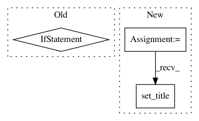

2e19f878707e04da7d9a4ccbe0cceb515b433124,dragonn/vis/__init__.py,,plot_ism,#,12
Before Change
// create discrete colormap of ISM scores
extent = [0, ism_mat.shape[0], 0, 100*ism_mat.shape[1]]
plt.figure(figsize=(20,3))
if vmin==None:
vmin=np.amin(ism_mat)
if vmax==None:
vmax=np.amax(ism_mat)
plt.imshow(ism_mat.T,extent=extent,vmin=vmin, vmax=vmax)
plt.xlabel("Sequence base")
After Change
axes[1].imshow(ism_mat.T,extent=extent,vmin=ymin, vmax=ymax, interpolation="nearest",aspect="auto")
axes[1].set_xlabel("Sequence base")
axes[1].set_ylabel("ISM Score")
axes[1].set_title(title)
axes[1].set_yticks(np.arange(50,100*ism_mat.shape[1],100),("A","C","G","T"))
plt.set_cmap("RdBu")
plt.tight_layout()
plt.colorbar()
In pattern: SUPERPATTERN
Frequency: 3
Non-data size: 3
Instances
Project Name: kundajelab/dragonn
Commit Name: 2e19f878707e04da7d9a4ccbe0cceb515b433124
Time: 2019-04-30
Author: annashcherbina@gmail.com
File Name: dragonn/vis/__init__.py
Class Name:
Method Name: plot_ism
Project Name: kundajelab/dragonn
Commit Name: 38512d92a8682a62e73c5b9e86366888be374532
Time: 2019-05-29
Author: annashcherbina@gmail.com
File Name: dragonn/vis/__init__.py
Class Name:
Method Name: plot_motif_scores
Project Name: scikit-learn-contrib/imbalanced-learn
Commit Name: 153f6e0ff5729fc22b68d5f6e0fd05edf96d8c2c
Time: 2019-11-17
Author: g.lemaitre58@gmail.com
File Name: examples/datasets/plot_make_imbalance.py
Class Name:
Method Name: